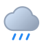

모델 예보
서산의 지금
--°
날씨 불러오는 중체감 --°
↑ 최고 --°↓ 최저 --°

강수확률
--%풍속
--습도
--%자외선
--일출·일몰 확인 중
예보 데이터를 연결하고 있습니다.
어제 같은 시각비교 불가
공식 관측 기준관측 자료 확인 중
LIFE-WEATHER INTELLIGENCE
비가 올까? 보다 중요한 건, 언제 무엇을 하면 좋을까?

강수확률
--%풍속
--습도
--%자외선
--관측 자료 확인 중
기상 데이터를 불러오고 있습니다.
날씨를 분석하고 있습니다.
필요한 날씨만 골라 듣고, 원하는 시각에 받아보세요.
지금 가장 중요한 변화
세 가지만 고르면 매일 같은 시간에 준비됩니다.
앱이 열려 있을 때 예약을 실행합니다. 기기 정책이 자동 재생을 막으면 알림으로 전환합니다. 모델 예보를 읽으며 공식 관측·특보를 대신하지 않습니다.
무엇을 · 언제 · 어떻게 받을지 한 번에 관리합니다.
Android 앱 업데이트 후 적용됩니다. 웹에서는 일반 브라우저 알림으로 표시합니다.
저장한 방식으로 예시 알림 1회 · 60초 뒤 닫힘
‘비 가능성 낮음’은 별도 확률을 만들지 않고, 향후 6시간의 각 시간별 강수확률이 선택 기준 이하인지 확인합니다. 맑음은 낮 시간의 하늘 상태·강수확률·예상 강수량을 함께 봅니다.
조건 저장 후 백그라운드 알림 시작
절전 중 알림 지연 가능
시간 선택으로 기온·강수 비교
선택 기간의 비·맑은 시간
예보를 불러오는 중
기온 °C · 강수확률 % · 강수량 mm · 시간을 누르면 상세 표시
| 시각 | 기온 °C | 강수 % | 강수 mm | 풍속 km/h | 돌풍 km/h |
|---|
예보 연결 중…
예보 분석 중…
예보 분석 중…
강수확률 50% 이상 또는 시간별 강수량 0.3mm 이상을 비 가능성으로 표시합니다. 단기 소나기·국지성 강수는 실제 현장과 차이가 날 수 있습니다.
날짜 선택 → 상세 날씨
앞으로 48시간 · 활동별 추천 시간
관심 활동 선택 · 홈 TOP 3에 반영
선택은 이 기기에 자동 저장됩니다. 언제든 변경할 수 있어요.
데이터를 연결하고 있습니다.
안내용 참고값입니다. 농약 방제는 등록약제 사용기준과 현장 풍속·풍향을 우선하세요.
강수·돌풍·저온 위험을 종합하는 중…
작물·생육단계와 저장 지역을 선택해 실제 시간별 모델 예보의 저온·고온·강수·돌풍 근거를 나란히 봅니다. 전용 기준을 확인하지 못한 단계는 공통 기상 신호만 표시합니다.
농업 Premium 권한과 상업 데이터 이용권이 확인되기 전에는 실행하지 않습니다.
모델 예보 기반 사전 점검입니다. 작물 상태·포장 미기상·토양수분·등록 농약 표시사항·공식 특보·농업기술센터 지도를 우선하세요.
대기질 모델 예측 · 측정소 실측과 차이 가능
미세먼지 예측 정보를 불러옵니다.
지역 선택 → 상세 날씨
주요 도시의 기온·강수·바람을 같은 시각으로 비교합니다.
지도·GPS 주변 주소 © OpenStreetMap contributors · 국내 날씨 기상청 · 대기질 AirKorea · 해외 MET Norway
현재 지역·목적지 날씨 비교
잠금 해제 뒤 작은 날씨 카드를 표시합니다. 잠금화면을 교체하거나 광고를 표시하지 않으며, 기능 사용 중 Android 실행 상태 알림이 유지됩니다.
Android 앱 지원 상태를 확인하고 있습니다.
밝게·어둡게 · 이 기기에 저장
현재 지역 · 저장 지역 최대 10개
핵심 날씨와 위험정보는 무료입니다. 가격은 임의로 정하지 않고 Google Play에 실제 등록된 지역화 가격만 표시합니다.
유료 판매 준비 상태를 확인하고 있습니다.
검증된 Plus 권한과 상업 데이터 이용권이 준비되면 사용할 수 있습니다.
기본 OFF입니다. 동의 전에는 품질 이벤트를 저장하지 않습니다.
날씨한눈의 날씨·대기질 값은 모델 예보이며 관측 실측 또는 공식 기상특보가 아닙니다. 상업 이용권·동의·전용 광고 단위 검증 전에는 광고와 유료 상품이 차단됩니다.